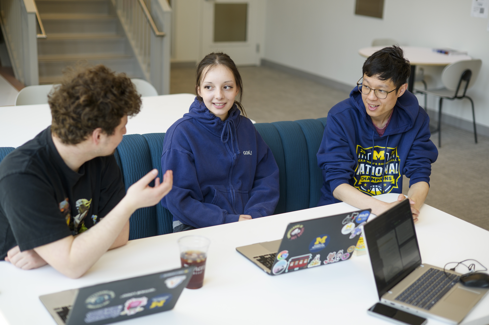

Master the art of adaptive project management, human-centered fieldwork, and constructive feedback as you execute your project in real time.
The Value of Navigating Friction & Active Execution
The middle of an engaged learning project is where real growth happens—and where real challenges surface. Real-world projects rarely follow a straight line. Requirements shift, team dynamics evolve, clients face unexpected internal constraints, and research data yields surprising results.
The true value of this phase lies in developing resilience, adaptability, and ethical agility. Learning to manage "scope creep," navigate mid-project feedback, and re-align technical decisions with human needs are the exact experiences that distinguish top UMSI graduates. When you view friction not as a barrier, but as a natural part of the applied learning process, you develop the strategic problem-solving skills needed in modern information careers.

Phase 3: Managing & Executing in the Field
Conducting research, tracking progress, and maintaining clear communication with project sponsors.
Focus & Objectives
Fieldwork & Research Methods: Apply human-centered design tools to observe contexts and extract insights.
Sponsor & Client Updates: Maintain transparency with regular progress reporting.
Feedback Loops: Gather, evaluate, and integrate constructive feedback mid-project.
What Others Have Done
The UMSI Engaged Learning Office allows students to explore many facets of research in the field. Below is just one of those examples!
Featured Resources & Handouts
Resources for managing an active engaged learning project
Observation & Needfinding
HFLI AEIOU Worksheet for Observations
Framework to categorize field observations (Activities, Environments, Interactions, Objects, Users).
User Research
HFLI User-Needs-Insights Worksheet
Translates raw interview and observation data into actionable design insights.
Feedback Management
HFLI Feedback Worksheet
Structures mid-point feedback cycles between students, instructors, and partners.
Case Analysis
Ginsberg Center Community Engagement Cases Handout
Practical scenarios illustrating ethical dilemmas and resolution strategies.